#install.packages("splines2")
library(splines2)
knots <- c(0.3, 0.5, 0.6)
x <- seq(0, 1, 0.01)
bsMat <- bSpline(x, knots = knots, degree = 1, intercept = TRUE)
plot(bsMat, mark_knots = "all")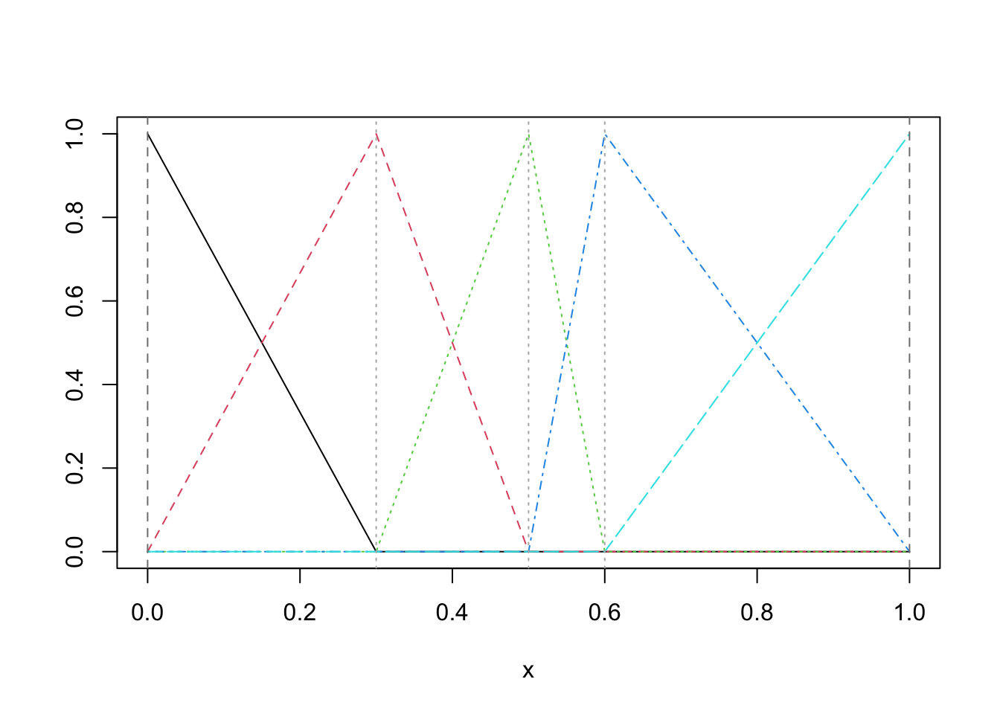
Pick some subset of the information covered in your annual review article that you are interested in exploring in more detail.
Identify the scope of your user guide - what will you cover? Specific software packages? When to use or not to use a specific technique?
#install.packages("splines2")
library(splines2)
knots <- c(0.3, 0.5, 0.6)
x <- seq(0, 1, 0.01)
bsMat <- bSpline(x, knots = knots, degree = 1, intercept = TRUE)
plot(bsMat, mark_knots = "all")
ibsMat <- ibs(x, knots = knots, degree = 1, intercept = TRUE)
op <- par(mfrow = c(1, 2))
plot(bsMat, mark_knots = "internal")
plot(ibsMat, mark_knots = "internal")
abline(h = c(0.15, 0.2, 0.25), lty = 2, col = "gray")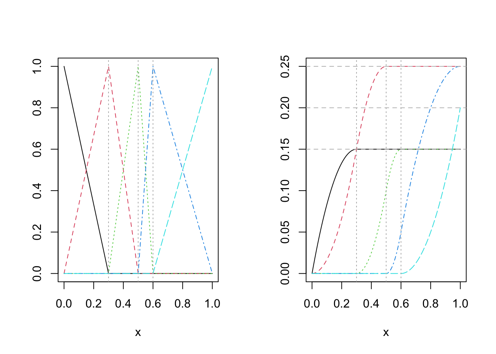
bsMat <- bSpline(x, knots = knots, intercept = TRUE)
dbsMat <- dbs(x, knots = knots, intercept = TRUE)
plot(bsMat, mark_knots = "internal")
plot(dbsMat, mark_knots = "internal")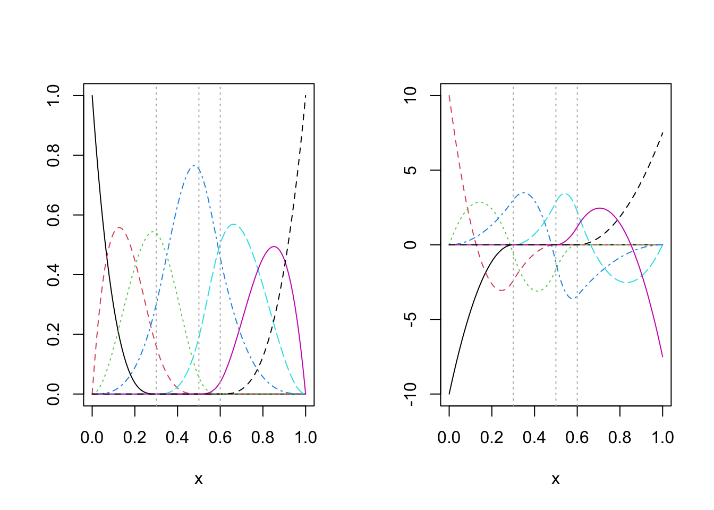
is_equivalent <- function(a, b) {
all.equal(a, b, check.attributes = FALSE)
}
stopifnot(is_equivalent(dbsMat, deriv(bsMat)))px <- seq(0, 3, 0.01)
pbsMat <- bSpline(px, knots = knots, Boundary.knots = c(0, 1),
intercept = TRUE, periodic = TRUE)
ipMat <- ibs(px, knots = knots, Boundary.knots = c(0, 1),
intercept = TRUE, periodic = TRUE)
dp1Mat <- deriv(pbsMat)
dp2Mat <- deriv(pbsMat, derivs = 2)
par(mfrow = c(1, 2))
plot(pbsMat, ylab = "Periodic B-splines", mark_knots = "boundary")
plot(ipMat, ylab = "The integrals", mark_knots = "boundary")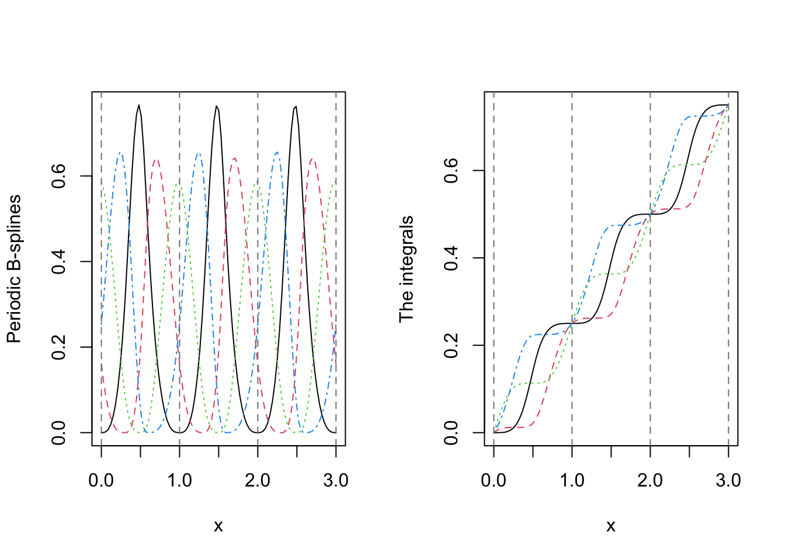
plot(dp1Mat, ylab = "The 1st derivatives", mark_knots = "boundary")
plot(dp2Mat, ylab = "The 2nd derivatives", mark_knots = "boundary")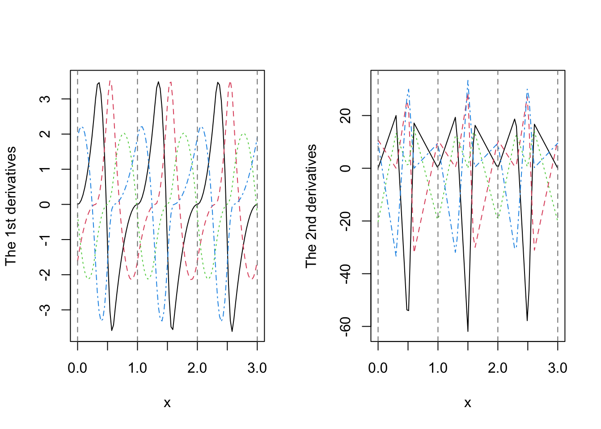
library(splines)
require(stats); require(graphics)
bs(women$height, df = 5) 1 2 3 4 5
[1,] 0.000000e+00 0.000000000 0.000000000 0.000000e+00 0.000000000
[2,] 4.534439e-01 0.059857872 0.001639942 0.000000e+00 0.000000000
[3,] 5.969388e-01 0.203352770 0.013119534 0.000000e+00 0.000000000
[4,] 5.338010e-01 0.376366618 0.044278426 0.000000e+00 0.000000000
[5,] 3.673469e-01 0.524781341 0.104956268 0.000000e+00 0.000000000
[6,] 2.001640e-01 0.595025510 0.204719388 9.110787e-05 0.000000000
[7,] 9.110787e-02 0.566326531 0.336734694 5.830904e-03 0.000000000
[8,] 3.125000e-02 0.468750000 0.468750000 3.125000e-02 0.000000000
[9,] 5.830904e-03 0.336734694 0.566326531 9.110787e-02 0.000000000
[10,] 9.110787e-05 0.204719388 0.595025510 2.001640e-01 0.000000000
[11,] 0.000000e+00 0.104956268 0.524781341 3.673469e-01 0.002915452
[12,] 0.000000e+00 0.044278426 0.376366618 5.338010e-01 0.045553936
[13,] 0.000000e+00 0.013119534 0.203352770 5.969388e-01 0.186588921
[14,] 0.000000e+00 0.001639942 0.059857872 4.534439e-01 0.485058309
[15,] 0.000000e+00 0.000000000 0.000000000 0.000000e+00 1.000000000
attr(,"degree")
[1] 3
attr(,"knots")
[1] 62.66667 67.33333
attr(,"Boundary.knots")
[1] 58 72
attr(,"intercept")
[1] FALSE
attr(,"class")
[1] "bs" "basis" "matrix"summary(fm1 <- lm(weight ~ bs(height, df = 5), data = women))
Call:
lm(formula = weight ~ bs(height, df = 5), data = women)
Residuals:
Min 1Q Median 3Q Max
-0.31764 -0.13441 0.03922 0.11096 0.35086
Coefficients:
Estimate Std. Error t value Pr(>|t|)
(Intercept) 114.8799 0.2167 530.146 < 2e-16 ***
bs(height, df = 5)1 3.4657 0.4595 7.543 3.53e-05 ***
bs(height, df = 5)2 13.0300 0.3965 32.860 1.10e-10 ***
bs(height, df = 5)3 27.6161 0.4571 60.415 4.70e-13 ***
bs(height, df = 5)4 40.8481 0.3866 105.669 3.09e-15 ***
bs(height, df = 5)5 49.1296 0.3090 158.979 < 2e-16 ***
---
Signif. codes: 0 '***' 0.001 '**' 0.01 '*' 0.05 '.' 0.1 ' ' 1
Residual standard error: 0.2276 on 9 degrees of freedom
Multiple R-squared: 0.9999, Adjusted R-squared: 0.9998
F-statistic: 1.298e+04 on 5 and 9 DF, p-value: < 2.2e-16## example of safe prediction
plot(women, xlab = "Height (in)", ylab = "Weight (lb)")
ht <- seq(57, 73, length.out = 200)
lines(ht, predict(fm1, data.frame(height = ht)))Warning in bs(height, degree = 3L, knots = c(62.6666666666667,
67.3333333333333: some 'x' values beyond boundary knots may cause
ill-conditioned bases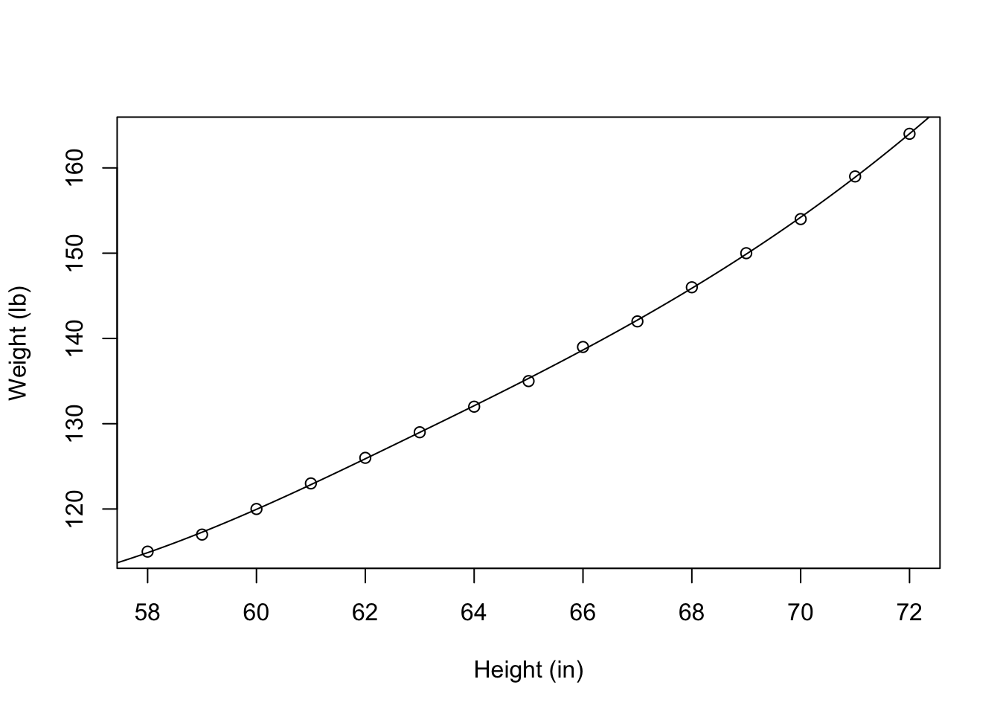
library(tidyverse)── Attaching core tidyverse packages ──────────────────────── tidyverse 2.0.0 ──
✔ dplyr 1.1.4 ✔ readr 2.1.6
✔ forcats 1.0.1 ✔ stringr 1.6.0
✔ ggplot2 4.0.1 ✔ tibble 3.3.1
✔ lubridate 1.9.4 ✔ tidyr 1.3.2
✔ purrr 1.2.1
── Conflicts ────────────────────────────────────────── tidyverse_conflicts() ──
✖ dplyr::filter() masks stats::filter()
✖ dplyr::lag() masks stats::lag()
ℹ Use the conflicted package (<http://conflicted.r-lib.org/>) to force all conflicts to become errorslibrary(splines)
finance <- read.csv("04-01-FInancial Sample Data.csv")
finance <- na.omit(finance)
ggplot(data = finance, aes(x = Units.Sold, y = Profit)) + geom_point()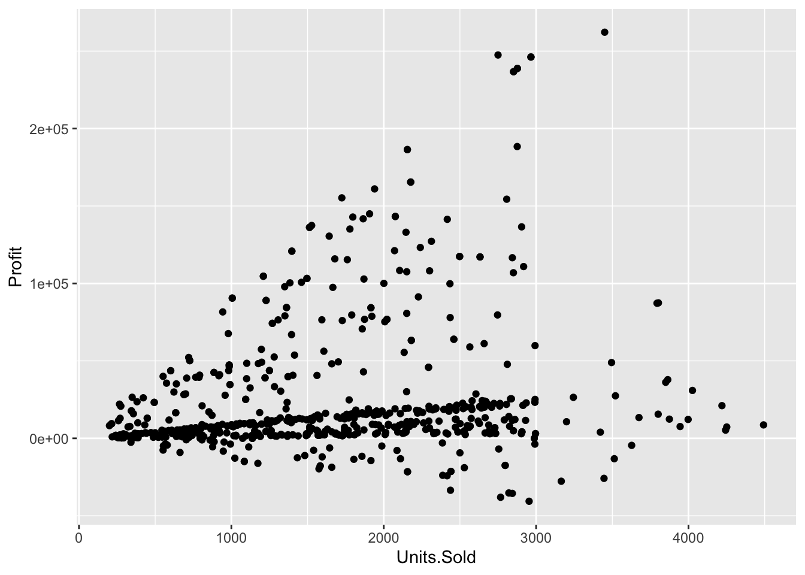
bs_model <- lm(Profit ~ bs(Units.Sold, df = 5), data = finance)
knots <- quantile(finance$Units.Sold, probs = c(0.25, 0.5, 0.75))
bs_model <- lm(Profit ~ bs(Units.Sold, knots = knots), data = finance)
finance$predicted <- predict(bs_model)
ggplot(finance, aes(x = Units.Sold, y = Profit)) +
geom_point(alpha = 0.5) +
geom_line(aes(y = predicted), color = "blue", size = 1.2) +
theme_minimal()Warning: Using `size` aesthetic for lines was deprecated in ggplot2 3.4.0.
ℹ Please use `linewidth` instead.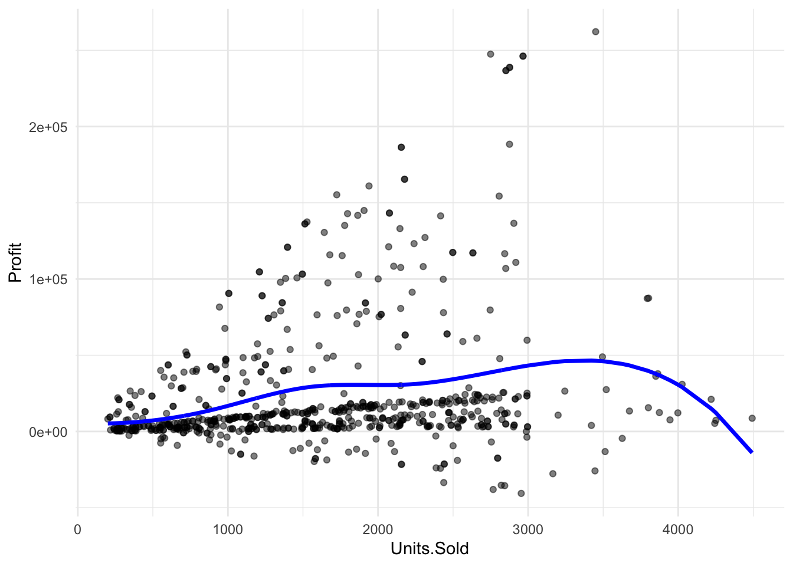
library(tidyverse)
library(splines)
housing <- read.csv("Housing.csv")
ggplot(data = housing, aes(x = area, y = price)) + geom_point()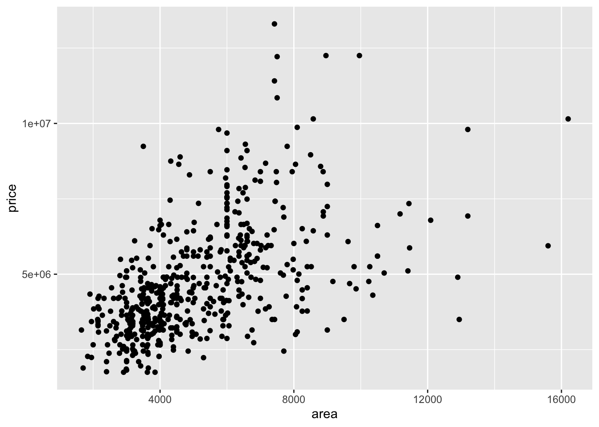
knots <- quantile(housing$area)
bs_model <- lm(price ~ bs(area, knots = knots), data = housing)
housing$predicted <- predict(bs_model)
ggplot(housing, aes(x = area, y = price)) +
geom_point(alpha = 0.5) +
geom_line(aes(y = predicted), color = "blue", size = 1.2) +
theme_minimal()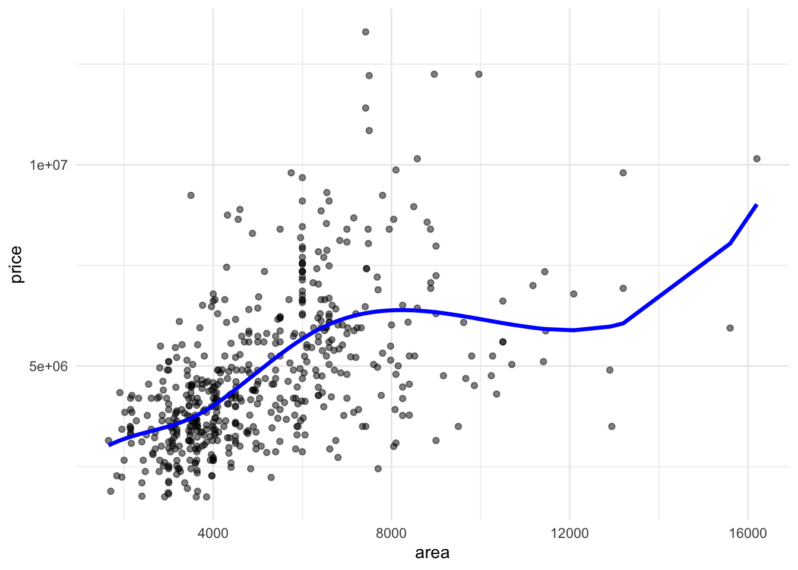
ggplot(housing, aes(x = area, y = price)) +
geom_line(alpha = 0.5) +
geom_line(aes(y = predicted), color = "blue", size = 1.2) +
theme_minimal()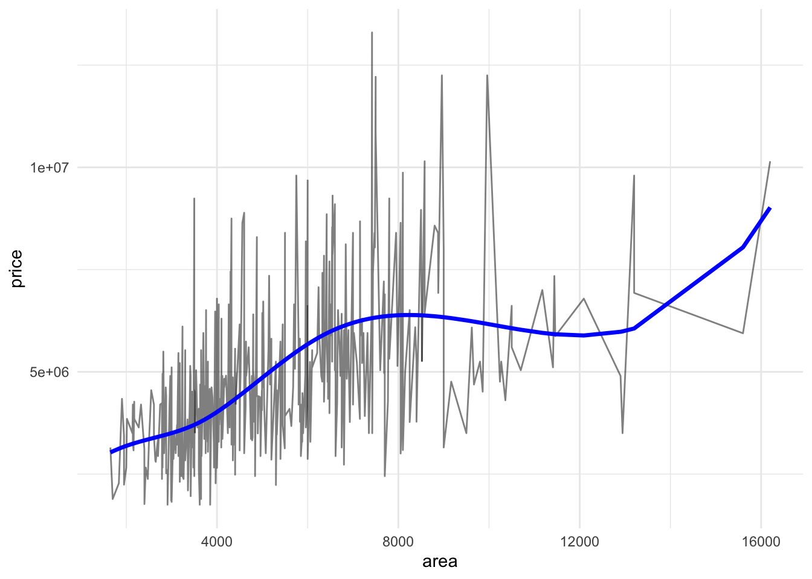
library(tidyverse)
library(mgcv)Loading required package: nlme
Attaching package: 'nlme'The following object is masked from 'package:dplyr':
collapseThis is mgcv 1.9-3. For overview type 'help("mgcv-package")'.set.seed(123)
n <- 1000
x <- runif(n,-4,4)
y <- cos(2*x) + rnorm(n, 0, 0.5)
df <- data.frame(x,y)
ggplot(data = df, aes(x=x,y=y)) +geom_point(alpha = 0.2) + theme_minimal()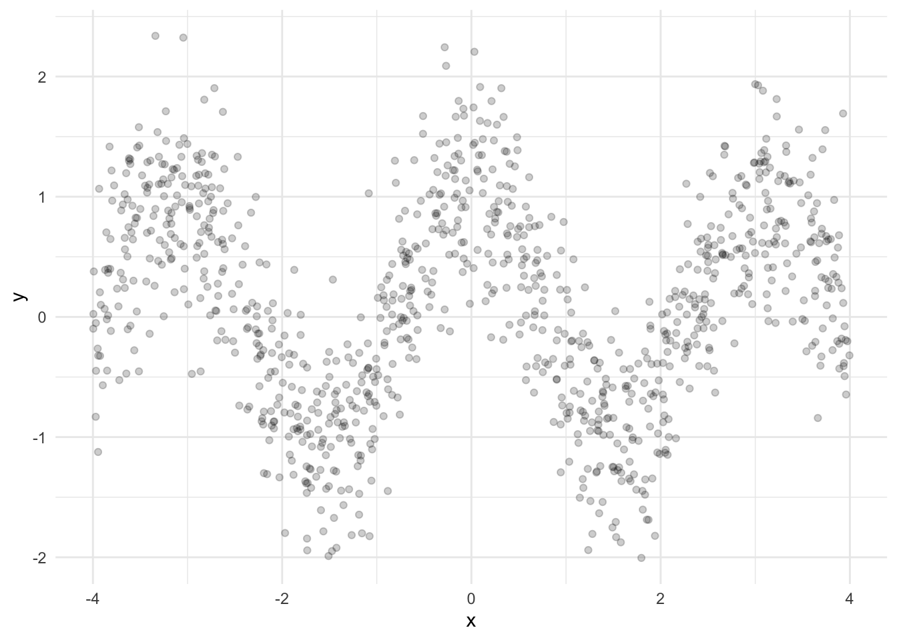
lm_model <- lm(y ~ bs(x, df = 20), data = df) #lower df means smoother line, higher df means more wiggliness
x_pred <- data.frame(x = seq(min(df$x), max(df$x), length.out = 300))
x_pred$y_hat <- predict(lm_model, newdata = x_pred)
ggplot(data = df, aes(x=x,y=y)) + geom_point(alpha = 0.2) + geom_line(data = x_pred, aes(x = x, y = y_hat), color = "blue", size = 1) + theme_minimal()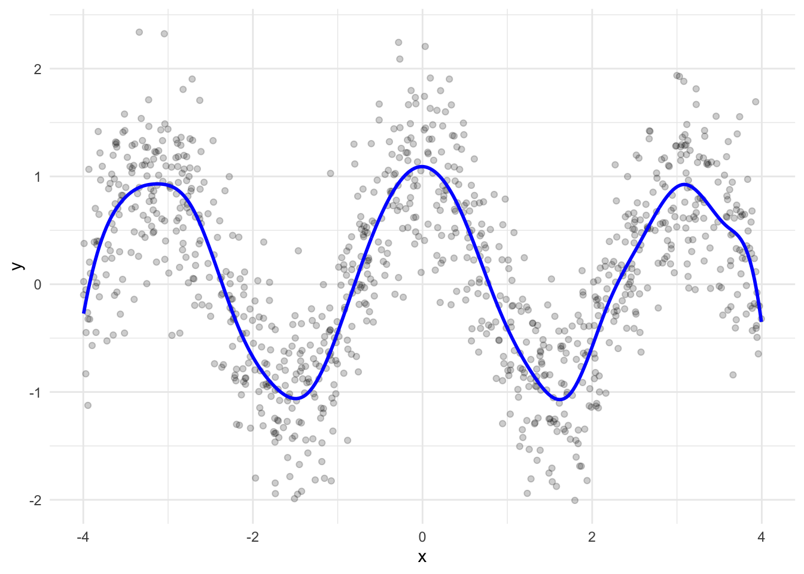
Lowess smoothing
set.seed(123)
n <- 1000
x <- runif(n,-4,4)
y <- cos(2*x) + rnorm(n, 0, 0.5)
df <- data.frame(x,y)
ggplot(df, aes(x = x, y = y)) +
geom_point(alpha = 0.4) +
geom_smooth(method = "loess", span = 1, se = FALSE,
aes(color = "Smoother = 1")) +
geom_smooth(method = "loess", span = 0.1, se = FALSE,
aes(color = "Smoother = 0.1")) +
geom_smooth(method = "loess", span = 0.01, se = FALSE,
aes(color = "Smoother = 0.01")) +
scale_color_manual(values = c("Smoother = 1" = "#000000", "Smoother = 0.1" = "blue", "Smoother = 0.01" = "red")) +
labs(color = "LOESS Span") +
theme_minimal()`geom_smooth()` using formula = 'y ~ x'
`geom_smooth()` using formula = 'y ~ x'
`geom_smooth()` using formula = 'y ~ x'Warning in simpleLoess(y, x, w, span, degree = degree, parametric = parametric,
: k-d tree limited by memory. ncmax= 1000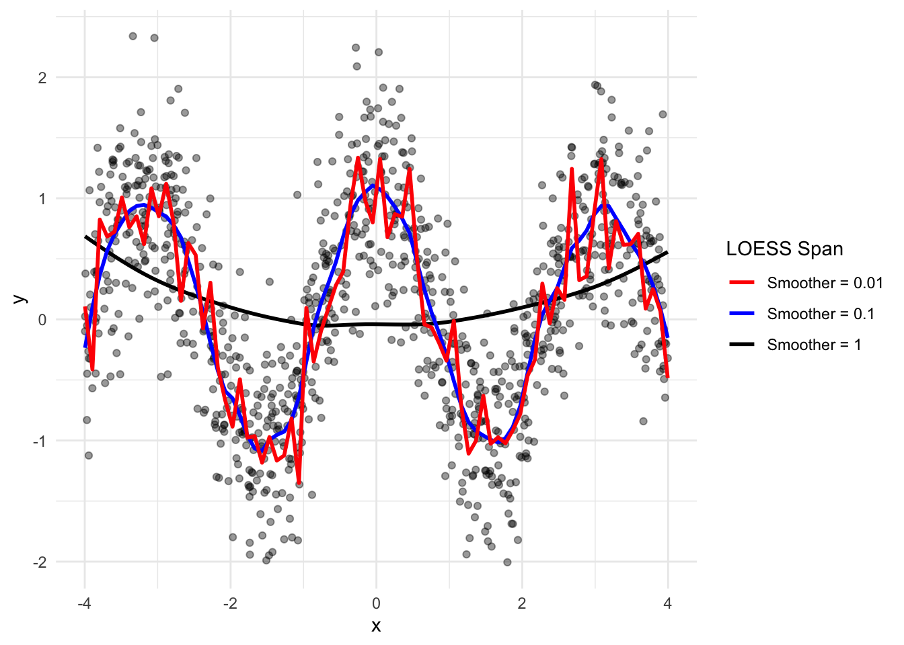
I need quite a bit more detail here to ensure that you’re set up for success. Define your scope - what type of splines? Will you compare to LOWESS smooths? Is the focus on penalized spline regression, or just smoothing splines?
“Fixing” messy data isn’t something splines can do, so I’d like you to try to reframe this and resubmit so that I can help steer you on a successful completion path.